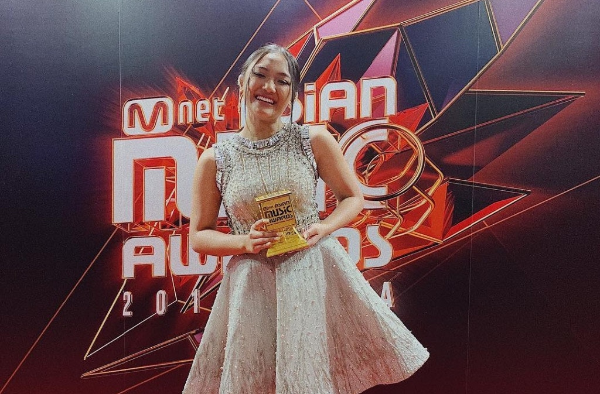

KEGIATAN MARION JOLA
|  | Tereliminasi enggak bikin semangat Marion hilang. Pada bulan Juni kemarin, ia merilis single pertamanya yang berjudul 'Jangan' bersama Rayi Putra. Psssst, kamu tahu enggak kalau video klip 'Jangan' sudah ditonton lebih dari tiga puluh enam juta kali! Tapi, semangat Marion enggak sampai situ aja, babes. Bulan Oktober kemarin, Marion baru saja merilis single keduanya yang berjudul So In Love dan telah ditonton lebih dari empat juta kali! Berkat kedua single-nya yang meledak di pasaran, Marion pun terpilih menjadi wakil dari Indonesia dalam ajang Mnet Asian Music Awards dan pulang dengan membawa penghargaan. |
| Kembali Ke Halaman Utama | |